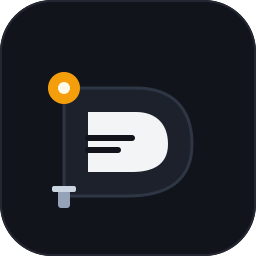
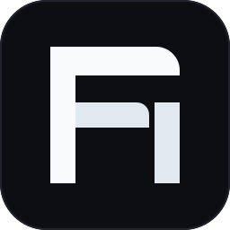

Grounded, authentic maritime typography and physical hardware materials. No saturated cyberpunk glows, no generic gradient washes, no AI tropes.


Banned the standard cyan-to-purple and neon emerald gradients that every LLM defaults to. Replaced with physical, authentic maritime pigments (signal amber, lifeboat orange, slate stone).
Every mark works as a crisp monochrome vector. If a design needs outer glow or drop shadows to be recognized, it is discarded.
Grounded in the physical reality of a harbor: breakwater seawalls, mooring shackles, and navigation lanterns that reflect the local-first offline safety of your data.